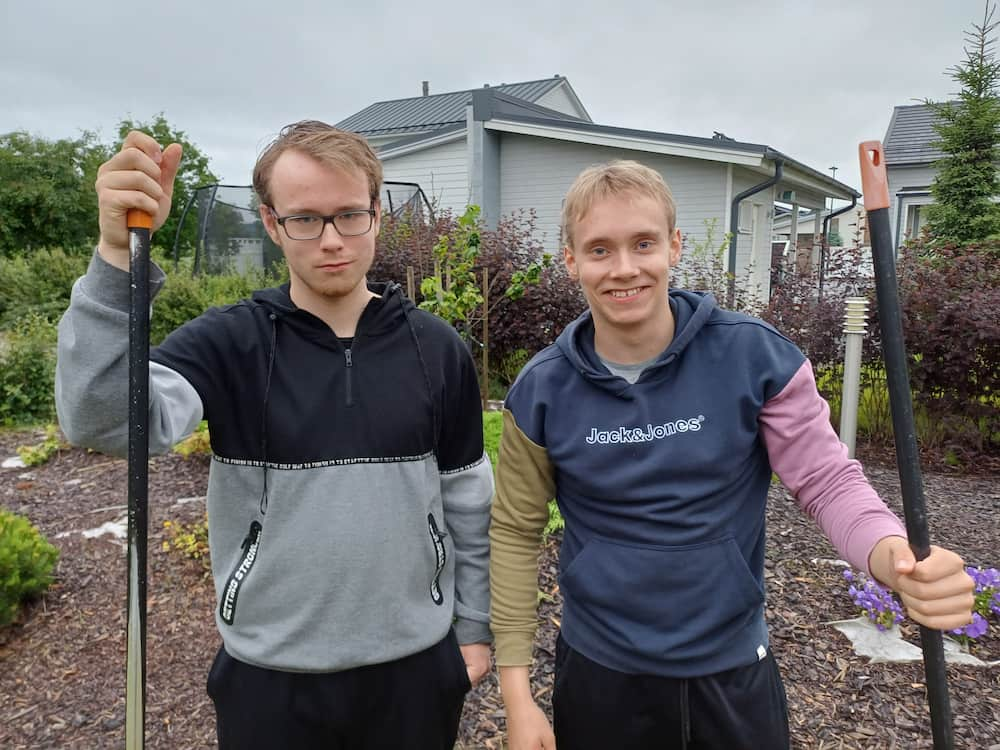

Tarinamme toiminnan takana
Olemme iältämme 16- ja 18 vuotta ja opiskelemme molemmat Porin lukiossa. Päätimme tänä kesänä luoda itsellemme kesätyöpaikat oman yrityksen kautta.
Olemme harrastaneet pienestä saakka jääkiekkoa, josta olemme molemmat oppineet korkean työmoraalin, täsmällisyyden sekä tinkimättömän asenteen. Se on myös saanut meidät tekemään aina kaiken täysillä niin hyvin kuin osaamme ja toimimaan erilaisten ihmisten kanssa paineen alla.
Harrastuksessa opitulla asenteella, olemme myös toimineet niissä harjoittelu ja kesätyöpaikoissa, joissa olemme olleet. Tästä esimerkkinä on mm. erinomaiset työtodistukset ja palautteet sekä hyvät asiakaspalvelutaidot. Työkokemuksen lisäksi olemme hoitaneet naapurimme pihatyöt sovitusti noin puolentoista vuoden ajan heidän asuessaan Amerikassa. Olemme myös auttaneet isovanhempiamme nuoruutemme ajan erilaisissa pihatöissä.
